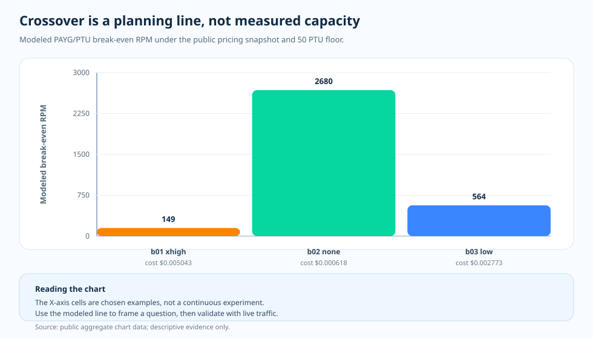

Topic essay · PTU/PAYG planning model
PTU/PAYG crossover: a planning line, not a capacity result
The crossover chart is useful precisely because it is limited. It turns the public cost and token-shape snapshot into a planning question: at what request rate would fixed PTU spend begin to look cheaper than PAYG for this measured workload shape? It does not prove how a live PTU target will behave under load.
Question
What can a modeled PTU/PAYG crossover tell us, and what must it not claim?
Evidence
Public crossover JSON, pricing snapshots, and token-shape throughput factors.
Finding
The crossover is a decision prompt. It is not direct evidence of saturation, 429 onset, or live capacity.

The model answers a narrow question
The crossover calculation combines mean cost per request, token-shape throughput factor, a public pricing snapshot, and a 50 PTU floor. The output is a modeled break-even RPM. For example, benchmark-01 extra-high effort lands around 149 rpm, benchmark-02 none around 2,680 rpm, and benchmark-03 low around 564 rpm.
Those numbers are useful because they expose how workload shape changes the planning conversation. They are not live-load measurements. They do not say where 429 begins, how cache behaves near saturation, or what a particular serving setup will do at p95 latency.
How to read the chart
The X-axis is a set of selected benchmark rows. The Y-axis is modeled break-even RPM. A taller bar means PAYG can rise to a higher request rate before the modeled PTU floor looks cheaper. A shorter bar means the workload reaches the modeled crossover earlier.
The bars are not a continuous capacity curve. They are planning markers derived from public aggregate data and a pricing snapshot.
Why the distinction matters
Without the distinction, a crossover chart can be misread as a promise. It is tempting to say that a row with a 149 rpm crossover “needs PTU” or that a row with a 2,680 rpm crossover “does not need PTU.” The evidence is more careful than that. The chart says what the economics look like under the modeled assumptions. A live system still needs latency, cache, retry, and saturation evidence.
That caution is not weakness. It is what makes the chart usable: it tells the team when to run a capacity experiment, not what the capacity experiment will find.
The story to keep
PAYG and PTU answer different questions. PAYG asks how much each completed request costs. PTU asks what fixed capacity can carry at an acceptable quality and latency level. The crossover line connects those worlds, but it does not collapse them into one measurement.
In this project, the line is therefore labeled as a modeled hypothesis. It belongs beside the measured charts, not above them.
The evidence table
| Evidence row | Measure A | Measure B | What it adds |
|---|---|---|---|
| benchmark-01 extra-high | Modeled 149 rpm | 50 PTU floor | Early crossover because the per-request bill is high. |
| benchmark-02 none | Modeled 2,680 rpm | 50 PTU floor | Late crossover because the measured request is cheap. |
| benchmark-03 low | Modeled 564 rpm | 50 PTU floor | Middle case: agent workload has a larger token shape. |
| Evidence boundary | Modeled economics | not live capacity | Use it to decide what to test next. |
What the evidence lets us say
The crossover is valuable when it stays humble: it converts evidence into a planning question and leaves live capacity to live measurement.